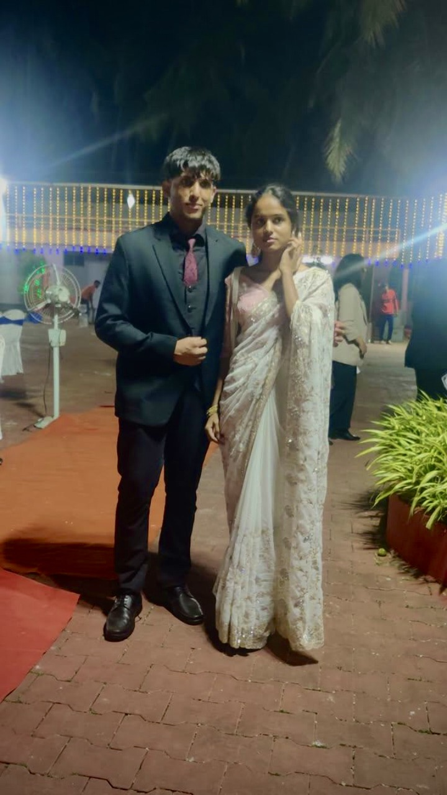
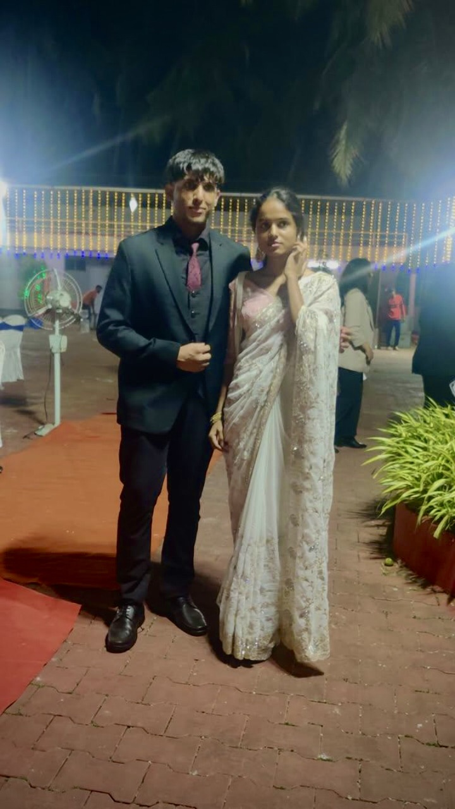
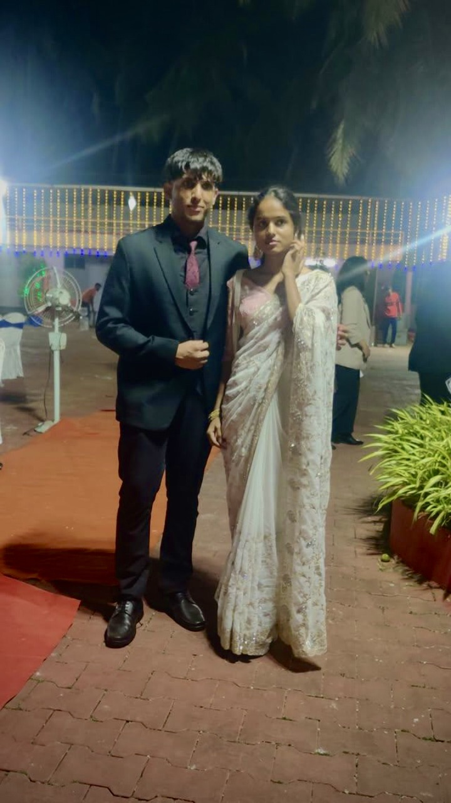

One of my favourite memories of us 🤍
(and one of our only pics 😔
btw, the white one in the gifs is you
stay on this page a little longer… not too long)
a long text chain that means everything ....
( You gotta tell me your favorite memories of us someday soon ... )
The first time I remember seeing you was during the major exams.
You wore a yellowish kurti 💛 and I really wanted to come and say hi,
but you looked scary 😭.
I don’t think you remember.
But eventually, when we landed in the same class,
I began looking at you sometimes when something funny would happen,
and you looked back too 🤍.
And then the day you texted me —
I genuinely did not know who you were 🤦♂️,
but I’m so thankful you did that.
Now we have what?
A couple of lakhs of messages across three social mediums 📱😭.
Your card honestly made me feel so special 🤍.
I don’t know how you’re that good at handmade things,
but I really hope those cards never stop
(even though I know they take way too much effort 🥲).
I still remember all the Numaan conversations
(would’ve beaten that guy 😤).
And every day, I’d wait to come home because I couldn’t really talk to you in college.
I genuinely thought you were scared of me,
or didn’t like my face 😭,
or were embaressed to talk to me in front of others.
We’ve had way too many random conversations,
and I’ve enjoyed every single one 🤍.
You don’t realise it, but you’re actually amazing at talking —
basically a superhero 🦸♀️.
I still wait for the good mornings ☀️
and I can’t sleep without the good nights 🌙.
It’s actually insane —
I don’t even do that with my mom 😭.
And some of my favourite moments
are when you randomly text anything.
Even after you’re gone,
I still wait… just in case you’re still typing 💬.
I also remember all the days you wore traditional clothes ✨
(I missed a couple 😭).
I really wish we’d taken more pictures —
would’ve made building this a lot easier for me 📸🥲.
We *really* need to take more pictures together, okay?
And I still want to take you to that Korean place
in front of CFAL, right next to my apartment —
I hope we get to do that soon 🤞.
I’m not very good at writing these kinds of texts,
but I’ll try to get better —
you’ll have to teach me 😅🤍.
And yes, we absolutely need to revive all our Spotify playlists 🎶💗.

One of my favourite memories of us 🤍
(and one of our only pics 😔
btw, the white one in the gifs is you
stay on this page a little longer… not too long)